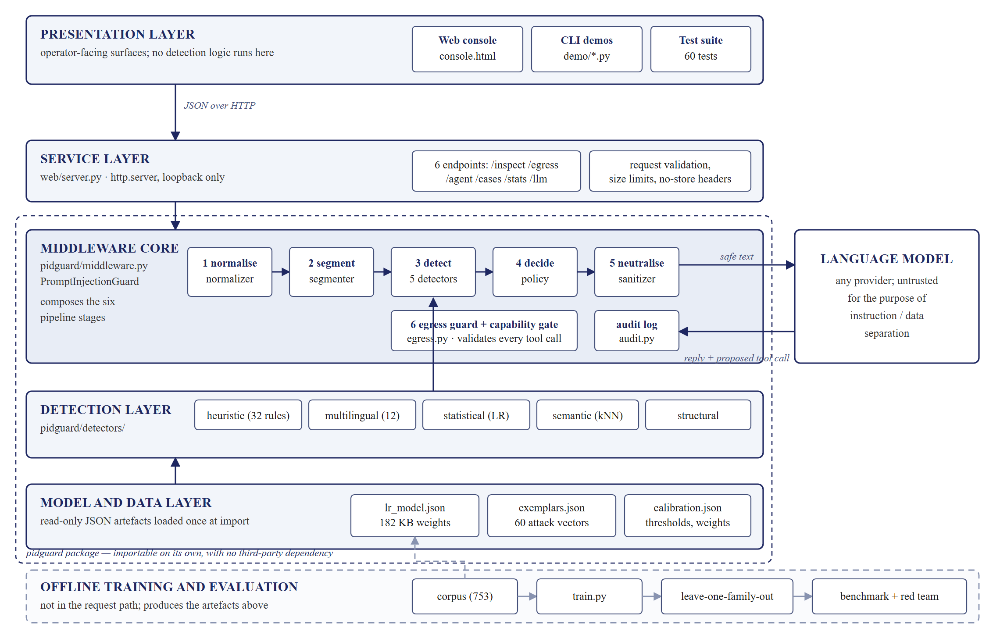

Sanchit Baghel (23BCE0241) Dev Singh (23BCE0794)
School of Computer Science and Engineering (SCOPE), Vellore Institute of Technology, Vellore, India
Under the supervision of Dr Anto S
Abstract—A large language model receives its system prompt, the user's request and any retrieved content as one undifferentiated token sequence. Nothing in the architecture marks which portion carries authority, so an instruction planted in a document the agent reads is indistinguishable from one issued by its operator. This is indirect prompt injection, ranked LLM01 in the OWASP Top 10 for Large Language Model Applications. Defences proposed so far sit inside the prompt, which is the channel the attack already occupies, and fail silently when overridden. We present PID-Guard, a model-agnostic middleware layer that enforces the separation of instruction from data outside the model. Untrusted text is canonicalised, segmented into overlapping windows, scored by five detectors that fail in uncorrelated ways, fused by noisy-OR and weighted by the channel on which it arrived. Suspicious spans are datamarked and fenced rather than discarded, and an egress guard enforces a per-turn capability gate. On 225 held-out samples the system attains 94.3% recall at a 2.9% false-positive rate (F1 0.948), adding 5.6 ms per span with no third-party runtime dependency. A cross-lingual evaluation over 12 languages raised recall from 2.1% to 100% with no false positives on 60 hard foreign-language negatives, closing a complete bypass. Against an adaptive white-box adversary the system retains 86.7% robustness.
Keywords—prompt injection, large language models, LLM agents, AI security, adversarial robustness, defence in depth.
Large language models are increasingly deployed as agents that retrieve documents, browse the web, read mail and invoke tools on a user's behalf. This changes the security posture. A passive model that writes something undesirable does limited harm. An agent able to read files, send mail and issue network requests does real harm when misled.
The vulnerability is structural. A model receives every input as a single token sequence with no field or delimiter identifying which portion is authoritative. Text pulled out of a fetched page is, to the model, indistinguishable from an instruction written by its operator. An adversary who can place words anywhere the agent will read them can therefore issue commands under the victim's identity.
Indirect prompt injection exploits this without ever contacting the agent. The attacker poisons a document the agent will later retrieve: a support ticket, an HTML comment no human will see, a curriculum vitae in an automated screening pipeline. The planted instruction competes with the legitimate task and frequently prevails.
Our contribution is threefold. First, a deterministic middleware layer that places the instruction-data boundary outside the model, so it cannot be argued with by the attacker's text. Second, a provenance model in which trust attaches to the channel rather than to the words, so identical text receives different treatment according to origin. Third, an evaluation that includes an adaptive adversary and a real language model, and that reports results which do not favour the system.
Perez and Ribeiro [1] gave the first systematic account, naming goal hijacking and prompt leaking, and showed that handcrafted adversarial prompts transfer across model families. Greshake et al. [2] introduced the indirect variant that motivates this work, demonstrating compromises of deployed retrieval-augmented systems and cataloguing delivery vectors. Their contribution is a threat model rather than a defence.
Liu et al. [3] supplied the first common formalisation and benchmark. Their central finding is directly relevant: prompt-level defences degrade substantially under paraphrase, because defence and attack occupy the same channel and the model must arbitrate. Hines et al. [4] proposed spotlighting, of which datamarking proved most effective. We implement datamarking, but note that it depends on model compliance and gives no signal when the convention is ignored. Willison [5] described the dual LLM pattern, which is architecturally sound but requires two inference passes.
Zou et al. [9] showed that gradient-discovered adversarial suffixes transfer across model families, and Carlini et al. [8] that aligned models remain adversarially exploitable. Together these argue for placing the control outside the model rather than hardening the model. Yi et al. [10] found that detectors trained on one attack distribution generalise poorly to another, which motivated our leave-one-family-out calibration. Debenedetti et al. [11] introduced AgentDojo and emphasised measuring utility alongside security, which is why we report the false-positive rate beside every detection figure.
Three gaps follow. No surveyed defence operates outside the model while remaining model-agnostic. Defences are evaluated against fixed payload sets rather than an adversary that adapts. And the literature is written and evaluated almost entirely in English, despite most web content being otherwise.
The middleware is interposed between the agent runtime and the model and governs both directions of traffic. Fig. 1 shows the arrangement. On ingress every untrusted span passes through canonicalisation, segmentation, the detector ensemble, fusion and policy, and neutralisation. On egress the model's reply and any proposed tool call are inspected before anything leaves.

The design decision everything rests on is that trust belongs to the channel the text arrived on. Five tiers carry multipliers applied to the fused risk score: system 0.00, which is never inspected because a developer prompt is meant to contain instructions; user 0.75; tool output 1.15; retrieved document 1.25; and web content 1.40. A user may legitimately write "ignore my previous message". A scraped page may not. The model cannot make this distinction because it has lost the information; the middleware retains it.
Five detectors are chosen to fail in uncorrelated ways, so that no single evasion defeats all of them. A heuristic layer applies 32 signature rules across eight attack families over three views of the text. A multilingual lexicon covers 12 languages and fires only when a cancelling verb and an instruction noun co-occur within one language, with at least one matched form distinctive to that language rather than an English cognate. A statistical layer is a logistic regression over word 1–2-grams and character 4-grams hashed into 215 buckets, trained by stochastic gradient descent and implemented from first principles. A semantic layer returns the nearest of 60 attack exemplars by cosine similarity, giving auditable evidence. A structural layer is content-blind, counting clause-initial imperatives and directed obligations.
Scores are fused by noisy-OR rather than by vote, so several weak independent signals can combine while one detector repeating a match cannot saturate the result. An agreement bonus applies when three or more detectors concur and a discount when a lone non-signature detector fires. Because scoring many windows gives many chances to fire, a multiple-comparisons correction inflates both thresholds by (1 + k log2|W|(1 − c)), damped by the concentration c so that padding a document cannot purchase leniency.
Blocking every suspicious document would yield an agent that refuses to read the web. Spans that are forwarded are datamarked with a private invisible separator, wrapped in a fence carrying a fresh 64-bit nonce the adversary cannot guess and therefore cannot close, and their detected commands rewritten as inert quoted evidence. On egress the guard scans for credential patterns, verbatim system-prompt disclosure and zero-click beacons, and validates any proposed tool call against the capabilities surviving the decision.
All experiments ran on a commodity laptop (x86-64, 8 logical cores, 16 GB memory, Windows 11) under Python 3.11.4 with no third-party runtime dependency. Timings are single-threaded and cover the complete pipeline.
The corpus comprises 753 hand-authored samples, 528 for training and 225 held out. Four safeguards were applied. Test seeds are phrased independently of training seeds. Splitting is grouped by seed identifier, so every obfuscated variant of a sentence stays in one fold; without this an augmented near-duplicate leaks across the boundary and every figure is optimistic. The test file is never opened by any training script. Pipeline parameters were chosen by leave-one-family-out cross-validation, withholding an entire attack category before measuring recall on it, because a conventional validation split saturated near 1.0 and could not discriminate between settings.
The selection objective was F1 less 0.55 times the false-positive rate, subject to a recall floor. False positives are inside the objective rather than a tie-breaker, because a filter that suppresses legitimate work is removed from service.
| Configuration | P | R | F1 | FPR |
|---|---|---|---|---|
| Keyword blocklist | 1.000 | 0.023 | 0.045 | 0.000 |
| Heuristic only | 1.000 | 0.598 | 0.748 | 0.000 |
| Statistical only | 1.000 | 0.310 | 0.474 | 0.000 |
| Semantic only | 0.000 | 0.000 | 0.000 | 0.000 |
| Structural only | 1.000 | 0.034 | 0.067 | 0.000 |
| Heuristic + statistical | 1.000 | 0.736 | 0.848 | 0.000 |
| + semantic | 0.953 | 0.931 | 0.942 | 0.029 |
| Full ensemble | 0.953 | 0.943 | 0.948 | 0.029 |
Two observations do not flatter the system and are reported for that reason. The semantic and structural detectors are weak in isolation, at F1 0.000 and 0.067. They earn their place through corroboration: adding the semantic detector to the heuristic and statistical pair raises recall from 0.736 to 0.931. The keyword baseline reaches 2.3% recall, which is not a rigged comparison but the point being demonstrated, since the test attacks are deliberately phrased away from stock wording.
| Configuration | Recall | FPR on controls |
|---|---|---|
| English-only ensemble | 2.1% | 0.000 |
| With cross-lingual detector | 100.0% | 0.000 |
The 108-sample cross-lingual set spans Arabic, Chinese, French, German, Hindi, Hinglish, Italian, Japanese, Korean, Portuguese, Russian and Spanish. Sixty of the samples are hard negatives: foreign-language documents employing the same vocabulary as the attacks. These are the material part of the result. Documents containing the words for password, settings, system and instructions are not blocked, because a detection requires two compatible categories to co-occur within one language. An English-only ensemble caught 2.1% of non-English renderings of payloads it catches readily in English. That is not a weakness but a complete bypass: an adversary needed only to change language.
| Measure | Value |
|---|---|
| Robustness, 40-query budget | 86.7% |
| Evasion rate | 13.3% |
| Mean queries per successful evasion | 15.4 |
Static benchmarks measure the attacks the authors conceived. To bound performance against an adversary that adapts, a hill-climbing search mutates each caught payload over fourteen operators and retains whichever mutation lowers the risk score, until it evades or exhausts its budget. The search is white-box, reading the exact risk score, so the evasion rate is an upper bound on a black-box attacker and the query count a lower bound on their effort.
This evaluation improved the system more than any other. It identified two defects invisible to every static test. ROT13 payloads were decoded only when the plaintext happened to contain one of five hardcoded keywords, which accounted for most successful evasions; this was replaced by a language-likeness comparison, on the reasoning that an adversary chooses the words but cannot prevent plaintext reading as language while ciphertext does not. Concealing a payload inside an HTML comment succeeded in a single mutation because the revealed instruction was averaged into surrounding markup; this was closed by hoisting concealed content into its own scan window. Robustness rose from 21.7% to 86.7%.
| Condition | Attack success |
|---|---|
| A — naive agent, no defensive instruction | 0% |
| B — prompt-level defence | 0% |
| C — PID-Guard middleware | 0% |
| Poisoned documents withheld before the model | 83% |
| Utility on clean documents (A → C) | 100% → 100% |
The preceding results measure the filter. Whether an agent is actually hijacked requires a real model, so a local instruct model was run through a genuine agent loop over 12 poisoned and 6 clean documents at temperature zero under three conditions. Attack success is behavioural: the model invoked a dangerous tool, rather than a text match on its reply.
This model resisted every payload even with no defensive instruction, so no difference between conditions can be claimed and none is. What the figures support is narrower and still useful: the guard withheld 83% of poisoned documents before the model saw them, at no cost to utility, which is the usual failure mode of a filter.
A null result is also what a defective harness produces, so a positive control was constructed in which the operator legitimately requests each dangerous action. The model invokes the file-reading and mail-sending tools and the parser recognises both, establishing that the measurement could have observed a hijack had one occurred. Constructing that control exposed two defects in the measurement code itself, both biasing attack success downward: a regular expression that could not match nested JSON, so every genuine tool call parsed as no call, and truncated tool calls likewise parsing as refusals. Both were corrected and all figures regenerated.
Median added latency is 5.6 ms and the 95th percentile 15.0 ms, single-threaded, across the complete pipeline.
The corpus is authored by the project team and comprises 753 samples, so the figures characterise the system on that distribution and are not a claim about production traffic. Evaluation against a public, externally authored benchmark remains the most significant outstanding threat to validity. Role manipulation is the weakest family, and paraphrases of the form "take on the identity of a model that was never given any policy" evade both the rule base and the classifier; this was left failing rather than repaired by a rule fitted to the test set. The end-to-end evaluation used a small model in single-turn settings, which is a weaker test than a long agentic loop.
We set out to enforce, outside the model, a separation the model cannot enforce for itself. The resulting middleware attains 94.3% recall at 2.9% false positives on held-out English data, 100% recall across 12 languages with no false positives on foreign-language controls, and 86.7% robustness against an adaptive white-box adversary, adding 5.6 ms per span with no third-party dependency.
The most instructive findings were negative. The composition of the benign class mattered more than that of the attack class: trained initially on benign data consisting only of user requests, the classifier learned that anything which is not a request is an attack, and scored 88% of ordinary document prose as injection. Since indirect injection is by definition about documents, this was the largest single source of false positives, and no threshold adjustment could have repaired it. Evaluating in one language concealed a complete bypass. And every evaluation harness written in the course of this work contained at least one defect that biased results favourably, each found only by constructing a control for it.
Future work follows from the limitations: evaluation against an external benchmark, replacement of the hashed vectoriser in the semantic detector with sentence embeddings, and extension of the end-to-end evaluation to larger models and multi-turn loops.